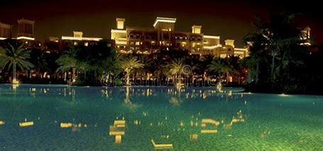
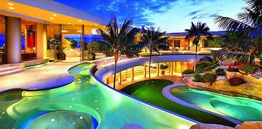
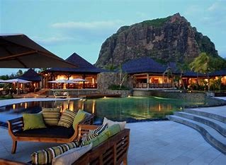

Tokyo

Tokyo is the capital of Japan and one of the world's largest cities
New York City is the most populated city in the United States and a global leader in many industries:
Location
New York City is located in southeastern New York state, at the mouth of the Hudson River, and is a gateway to the North American continent.
Size
New York City is 305 square miles (790 square km) in area.
Boroughs
New York City is made up of five boroughs: Brooklyn, the Bronx, Manhattan, Queens, and Staten Island. Each borough has its own distinct flavor and neighborhoods.
Attractions
New York City has many iconic attractions, including the Statue of Liberty, Ellis Island, Times Square, Broadway shows, Rockefeller Center, Empire State Building, and Grand Central Terminal.
Culture
New York City is a global center of culture, with many cultural institutions and world-renowned parks.
Economy
New York City is a global center of finance and commerce, technology, entertainment and media, academics and scientific output, the arts and fashion, and international diplomacy.
Nickname
New York City has many nicknames, including "The Big Apple" and "The City That Never Sleeps".
History
New York City was settled in 1624 and named after James, Duke of York.
Famous Places in Tokyo
- Tokyo Tower
- Sensō-ji Temple
- Shibuya Crossing
- Meiji Shrine
- Tokyo Skytree
- Akihabara
- Tsukiji Outer Market
- Ueno Park
- Harajuku
- Odaiba
Best Place To Stay

Paradise

Indigo Tokyo Shibuy

ANA InterContinent Hotel